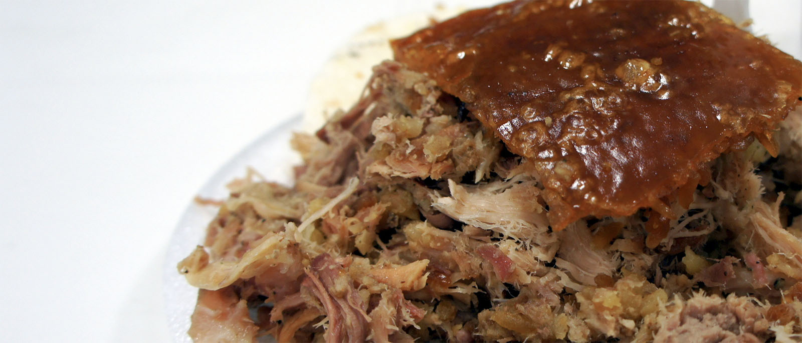

Lechona Tolimense

Lechona, a typical dish from Tolima, Colombia
Ingredients
- 2 kilos of pork beef
- 500 g of onion
Photo of step 2 of the Lechona Tolimense recipe
- 500 g of dried yellow peas
- 3 garlic bulbs
- Sea salt
- Black pepper
- Thyme
- Laurel
- Pigskin
- Pepper
- 1/2 tablespoonBaking soda
Steps
- Put the dried peas in the Pressure Cooker until soft.
- Put the ingredients in the blender for a couple of minutes and pour them over the meat, let it rest as the peas are cooking.
- Wipe off the excess fat from the pork skin.
- After the pea is ready, let it cool and prepare the refractory, alternately placing a layer of pea and a layer of meat.
- At the end, cover the skin with the mixture, apply salt, color, pepper and a little baking soda (to make it crispy).
- Leave in the oven at 210°C (410 °F), for 4 hours, 2 hours covered with aluminum foil, then remove it to toast.
- When the meat is dry, remove from the oven, let it rest for 20 minutes and serve accompanied by arepa.